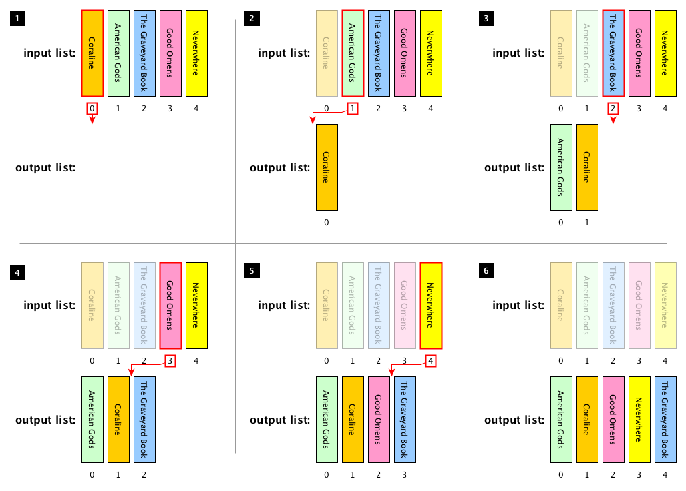

These lecture notes introduce the notion of brute-force algorithms with the implementation of two algorithms of this kind: linear search and insertion sort. The historic hero introduced in these notes is Betty Holberton, who was one of the first programmers of the ENIAC, and one of the key people for the development of several programming languages and algorithms for sorting objects.
Copyright notice. This work is licensed under a Creative Commons Attribution 4.0 International License. You are free to share (i.e. copy and redistribute the material in any medium or format) and adapt (e.g. remix, transform, and build upon the material) for any purpose, even commercially, under the following terms: attribution, i.e. you must give appropriate credit, provide a link to the license, and indicate if changes were made. You may do so in any reasonable manner, but not in any way that suggests the licensor endorses you or your use. The licensor cannot revoke these freedoms as long as you follow the license terms.
Historic hero: Betty Holberton
Frances Elizabeth – knows as Betty – Holberton was one of the first programmers of the Electronic Numerical Integrator and Computer (ENIAC), the earliest electronic and general-purpose computers developed between 1943 and 1946 with the funds of the United States Army. In addition, she was also involved in the development of several programming languages, such as COBOL and FORTRAN, and the creator of the first statistical analysis tool, that was used for analysing the data of the United States Census in 1950.
She dedicated a huge part of her work in the development of algorithms for sorting the elements in a list. The activity of sorting things is a typical human activity, which can be of course automatised by means of computers, and it is a property to have for several tasks.
Of course, sorting things is an expensive task, in particular if you have to order billions of items. However, having such items sorted in some way is so crucial for several additional tasks that we can perform on the list that contains them. For instance, in libraries, books are ordered according to specific guidelines – e.g. Dewey classification for clustering books according to particular fields, where each cluster contains books ordered according to the authors' name and the book title. With this kind of order, the librarian can find a requested title avoiding to look all the billion books available one by one, thus saving a huge amount of time, after all. Thus, to sort things in advance is a winning practice, if one has to search these things several times in the future.
May the (brute) force be with you
In this lecture, for the very first time, we start to talk about problem-solving methods. In Computer Science – and, generally speaking, in Computational Thinking – problem-solving is the activity of creating a computer-interpretable process (i.e. an algorithm) for solving some given problem, e.g. ordering alphabetically all the books in a library. There exist several different methods for solving problems that have been proposed in Computer Science, and all of those are grouped into general categories. Probably, the simpler category of problem-solving methods is the brute-force approach.
Brute-force algorithms are these processes that reach the perfect solution of a problem by analysing all the possible candidates that may provide a solution to a certain computational problem, and then check if each candidate solves the problem question. There are advantages and disadvantages in adopting such kind of approach. Usually, a brute-force approach is simple to implement and it will always find a solution to the computational problem. However, its computational cost depends strictly on the number of possible candidate solutions that are available. Thus, often, for practical problems with a huge solution space, it is a rather slow, even if simple, approach to adopt. A good suggestion is to use such approach when the problem size is small.
Abstract strategy board games, such as Chess or Go, belong to that set of computational problems that have a quite huge solution space. For instance, for writing a brute-force algorithm which is able to play appropriately the game (and, hopefully, win), one needs to consider all the possible legal moves that are available on the board (shown in ). According to John Tromp, the number of all the possible legal moves in Go was determined to be 208168199381979984699478633344862770286522453884530548425639456820927419612738015378525648451698519643907259916015628128546089888314427129715319317557736620397247064840935. That makes a brute-force approach totally untractable, even for an electronic computer.
However, there are other kinds of problems that are tractable using brute-force algorithms. In order to solve these problems, usually, we need to iterate some block of instructions several times. For instance, generally speaking, for ordering a sequence of books on a bookshelf, one would have to look to each of them and to put it in the right position, and this operation should be repeated for each book in the bookshelf.
ThyMopani has two alternatives for creating iterative blocks: foreach loops and while loops. The first kind of iteration mechanism is provided in ThyMopani by means of a for statement, which is briefly illustrated in . In practice, all the instructions within the for block are repeated for each item included in a collection – any of them: a list, a queue, etc.
for item in <collection>:
# do something using the current item
The general structure of a foreach loop in ThyMopani.
The foreach loop is very useful when we want to iterate on all the elements of a list for applying some sort of operation on each of them, or to find a particular value – something that we discuss in more detail in . For instance, we can use a foreach loop for creating a stack with all the elements included in a list, as shown by the simple algorithm in .
def stack_from_list(input_list):
output_stack = deque() # the stack to create
# Iterate each element in the input list and add it to the stack
for item in input_list:
output_stack.append(item)
return output_stack
A simple algorithm that takes a list as input and creates a stack with all the values the list contains – by using a foreach loop.
The while loop, instead, works in a slightly different way. ThyMopani allows us to create it by using a while statement (as shown in ), which basically will repeat all the instructions that are contained in its block until the condition specified is true.
while <condition>:
# do something until the condition is true
The general structure of a while loop in ThyMopani.
For instance, it is possible to use a while statement for implementing the run_forever algorithm used in the lecture about computability. shows one of its possible implementation in ThyMopani.
def run_forever():
value = 0
while value >= 0:
value = value + 1
Another simple algorithm that sums 1 to a starting value indefinitely.
In the following sections, we reuse some of these iterations in order to implement two brute-force algorithms for searching the position of an item in a list, and for ordering a list. These are known as linear search and insertion sort.
Linear search
Searching the position in which a particular value is in a list is a common operation, which has applications in several real-life task. For instance, consider again the example of the library introduced in . The typical operation performed by a librarian, once she has received a particular request for a book, is to consult the catalogue of all the books managed by the library so as to find the appropriate location where the requested book is placed in the library. This is a sort of real application of the aforementioned abstract problem of searching a value in a list, which is formally defined as follows:
Computational problem: find the position of the first occurrence of a value within a list.
While there are several approaches that can be used to find an element in a list, we focus on a particular algorithm, called linear search. This approach is pretty simple. The idea is to iterate over all the items contained in an input list one by one, and checking if each of them is equal to the value we are looking for, specified as input. Once the value has been found, its position in the list is then returned. If the value is not contained in the list, no position is returned at all.
There are some aspects of the description of the linear search algorithm that must be clarified before providing its implementation in ThyMopani. The first one is the fact that an item in a list has a specific position. Which is something quite natural, if you think about it. However, in the previous lecture, we have not mentioned how to get such position. In addition to that, there is this aspect typical of Computer Science, that wants to number every position starting from 0, instead of 1. Thus, for instance, looking at the books in , Terry Pratchett's The Carpet People has position 0, James Ponti's Dead City has position 1, and so on.
The position numbers assigned to a book of a list according to the typical Computer Science habit – which starts numbering from 0.
ThyMopani allows one to use the support algorithm def enumerate(input_list) for retrieving the current position of an item in a list that is accessed by means of a foreach loop. This support algorithm takes as input a list of values, and returns a list of tuples, with two elements each: the first element is the position of the item in consideration, while the second element is the item itself. In ThyMopani, a tuple is created by specifying some comma-separated values between square brackets – for instance, my_tuple = (0, 1, 2, 3, 4, 5) assigns a tuple with six numbers to the variable my_tuple. While tuples could be perceived similar to lists, they actually are not. The main difference with lists is that tuples do not provide any way for updating them with a new value, e.g. by using the operation like it happens with lists. Thus, once a tuple is created, it stays forever.
Considering these aspects, running the support algorithm enumerate(list(["a", "b", "c"])) will return the following list of tuples: list([(0, "a"), (1, "b"), (2, "c")]), where the first item of each tuple is the position that the second item of the tuple has in the original list. In addition, ThyMopani allows us to decouple the items in a tuple by specifying names for each item with variables created in the for statement on-the-fly, as shown in . Thus, for instance, a foreach loop like for position, item in list([(0, "a"), (1, "b"), (2, "c")]) will assign 0 to position and "a" to item in the first iteration, 1 to position and "b" to item in the second iteration, and 2 to position and "c" to item in the third iteration.
for <var_item_1>, <var_item_2>, ... in <list of tuple>:
# here you can use directly the variables defining the various items in the tuple
How ThyMopani allows one to decouple tuples in foreach loops involving a list of tuples, by assigning a variable to each item in the tuple.
The second aspect that is implicit in the description of the linear search algorithm introduced before is that the algorithm should not return any position if the value to search is not present in the list. In ThyMopani, this can be done implicitly by not returning anything (i.e. by not ever executing the statement return) or explicitly by returning a particular object that means nothing, i.e. None.
At this point, we have all the ingredients for developing the linear search algorithm in ThyMopani. This is illustrated in .
def linear_search(input_list, value_to_search):
# iterate all the items in the input list, getting also their position on the list
for position, item in enumerate(input_list):
# check if the current item is equal to the value to search
if item == value_to_search:
# if so, the position of the current item is returned and the algorithm stops
return position
The linear search algorithm described in ThyMopani.
In order to understand how the algorithm in works, we have prepared a description of the various execution steps (shown in ) of the foreach loop introduced in the algorithm. This would allow the reader to have a first glance at how iterative loops work from a purely computational point of view.
# Define a list of book titles
list_of_books = list(["Coraline", "American Gods", "The Graveyard Book", "Good Omens", "Neverwhere"])
# Run the linear search algorithm on that list of books, looking for "The Graveyard Book"
linear_search(list_of_books, "The Graveyard Book")
# FOREACH LOOP EXECUTION
# enumerate(input_list) will result in:
# list([(0, "Coraline"), (1, "American Gods"), (2, "The Graveyard Book"), (3, "Good Omens"), (4, "Neverwhere")])
#
# Iteration 1
# position = 0
# item = "Coraline"
# item == value_to_search is False
# Continue to the next iteration
#
# Iteration 2
# position = 1
# item = "American Gods"
# item == value_to_search is False
# Continue to the next iteration
#
# Iteration 3
# position = 2
# item = "The Graveyard Book"
# item == value_to_search is True
# Return the variable position (value 2) and end the execution of the algorithm
An example of the execution steps of the linear search algorithm implemented.
Insertion sort
As already mentioned in , the task of ordering a sequence of items is a quite important operation we usually have to deal with in everyday life. Recalling the example of the library, having the books sorted will make the operation of searching them more efficient, and would allow us to avoid to use naive approaches for the search, e.g. the one introduced in , which is quite expensive if we have billion of books to check. Thus, in this section we propose one particular brute-force algorithm for addressing the following computational problem:
Computational problem: sort all the items in a given list.
The algorithm that we want to use for addressing the aforementioned computational problem is called insertion sort. It is one of the simpler sorting algorithms to implement, and it is quite efficient for small lists. The idea behind this algorithm is the following. It considers the items in the list one by one, in the order they have been placed. Thus, at each iteration, it removes one item from the input list, it finds the right location for it looking at the elements on its left only – that have been already ordered in previous iterations – and it inserts it in the right location. It finishes once all the items in the list have been considered. An example of the execution of this algorithm is shown in .

The execution of the insertion sort algorithm using the following list of book titles as input: Coraline, American Gods, The Graveyard Book, Good Omens, Neverwhere. The book highlighted by a bold red border is the one currently selected in the particular iteration of the algorithm, and the red arrow shows where it should be placed in the output list. When a book title in the input list is shown in transparency it means that it has been already considered in some previous iterations, and it has been already placed in the output list in the correct order.
In order to provide a ThyMopani implementation of this algorithm, we need to introduce two support algorithms and one additional operation that can be used on lists. The first algorithm we need to use is def range(stop_number). It takes a non negative number as input and returns the list of all numbers from 0 to the one preceding the input number. Thus, for instance, range(4) returns the list list([0, 1, 2, 3]), while range(0) returns the empty list list([]). The other support algorithm is def reversed(input_list), that takes a list as input and returns a new list with all the elements sorted in the opposite order. Thus, for instance, reversed(list([0, 1, 2, 3])) returns the list list([3, 2, 1, 0]). These two algorithms can be used in combination so as to obtain, at a certain iteration of the insertion sort algorithm, the positions of the items that have been already ordered in the past iterations by specifying the position of the current item considered – e.g. reversed(range(2)) returns the list list([1, 0]) starting from the position (i.e. 2) of the third item in the input list.
In addition, we need a way for selecting an item in a list and for inserting an item in a specific position in a list. For addressing these tasks, ThyMopani makes available the additional list methods <list>[<position>] and <list>.insert(<position>, <item>). In particular, the former returns the item in the list at the specified position –e.g. if we have the list my_list = list(["a", "b", "c"]), my_list[1] returns "b". The latter method allows one to put <item> in the position specified, and it shifts all the elements with position greater than or equal to <position> of one position – e.g., by applying my_list.insert(1, "d"), the list in my_list is modified as follows: list(["a", "d", "b", "c"]).
At this point, we have all the ingredients for developing the insertion sort algorithm in ThyMopani. This is illustrated in .
def insertion_sort(input_list):
result = list() # A new empty list where to store the result
# iterate all the items on the input list
for item in input_list:
# initialise the position where to insert the item at the end of the result list
insert_position = len(result)
# iterate, in reverse order, all the positions of all the items already included in the result list
for prev_position in reversed(range(insert_position)):
# check if the current item is less than the one in prev_position in the result list
if item < result[prev_position]:
# if it is so, then the position where to insert the current item becomes prev_position
insert_position = prev_position
# the item is inserted into the position found
result.insert(insert_position, item)
return result # the ordered list is returned
The insertion sort algorithm described in ThyMopani.
Exercises
Write in ThyMopani the support algorithm def enumerate(input_list) introduced in .
Write in ThyMopani the support algorithm def range(input_number) introduced in .
Write in ThyMopani the support algorithm def reversed(input_list) introduced in .
Write down the execution steps of linear_search(list(["Coraline", "American Gods", "The Graveyard Book", "Good Omens", "Neverwhere"]), "The Sandman"), as explained in .